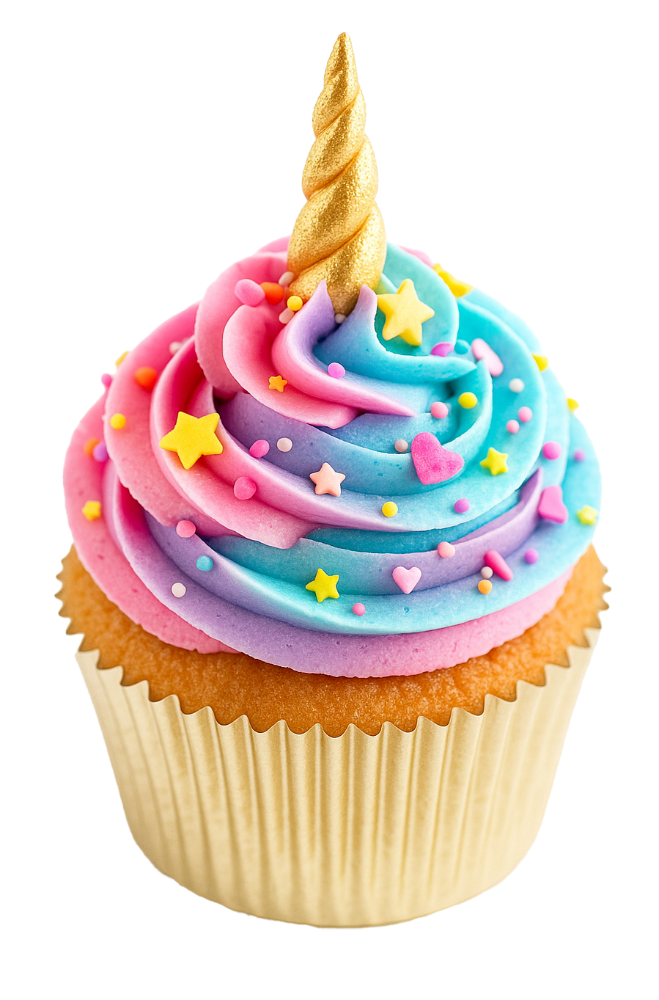

유니콘
컵케이크

재료
- 흑설탕 150g
- 계란 2개
- 버터 100g
- 셀프라이징 밀가루 150g
- 메이플시럽 3큰술
- 바닐라추출물 1티스푼
- 우유 4티스푼
- 슈가파우더 300g
- 버터 200g
- 스프링클, 식용색소(3가지 색)
만드는 방법
- 오븐을 180°C로 예열한다. 머핀 틀에 종이 컵을 깔아둔다.
- 볼에 실온의 버터와 흑설탕을 넣고 3~5분간 밝은 색이 될 때까지 휘핑한다.
- 계란을 하나씩 넣으며 잘 섞고, 밀가루를 체쳐 넣은 후 가볍게 섞는다.
- 완성된 반죽을 틀에 나누어 담고, 180°C에서 약 20분간 굽는다. 식힘망 위에서 완전히 식힌다.
- 메이플시럽, 바닐라추출물, 물 1큰술을 섞어 시럽을 만들고, 식은 컵케이크 위에 뿌린다.
- 버터크림은 슈가파우더, 버터, 우유, 바닐라추출물을 함께 휘핑해서 만들고, 4등분 후 3개의 식용색소를 넣는다.
- 3색 크림을 짤주머니에 나란히 넣고 컵케이크 위에 소용돌이 모양으로 짠다.
- 스프링클을 취향껏 뿌리면 완성! 냉장보관 후 하루 지나 먹어도 맛있다.
✴︎ 난이도: 🦄 🦄
✴︎ 조리 시간: 약 40분
✴︎ 굽는 온도: 180°C
✴︎ 메모
버터크림 색 조합에 따라 컵케이크 분위기가 확 달라진다.
오븐에서 퍼지는 냄새 덕분에 혼자 만들어도 기분이 좋아지는 레시피!